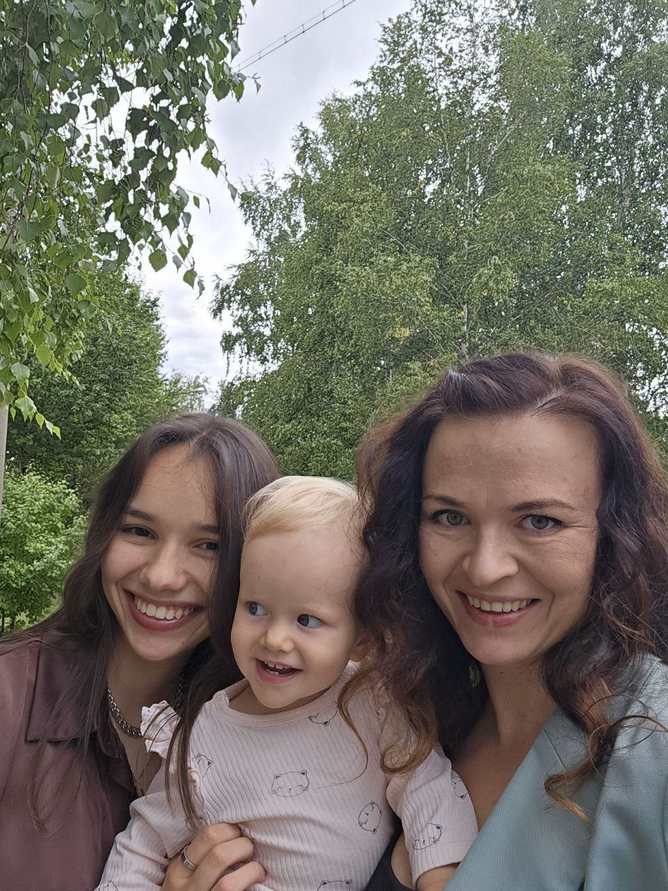

Первый питомец- Немецкая овчарка
В 2012 году у нас в семье появилась Немецкая овчарка, мы ее назвали Джесси, пока она была молодой мы с мамой много гуляли в парке, и там у собаки появился друг хаски, они вместе бегали, играли в догонялки, прыгали по сугробам. На данный момент собаке уже 13 лет, у нее не такое хорошее здоровье и сейчас она уже бабушка по этому много времени спит
Плюсы моей собаки:
- Она очень терпиловая
- Умная, знает много команд. Понимает человеческий язык
- Ласковая
- Мягкая и пушистая
Минусы:
- Легко перевозбуждается
- Лает в машине, скулит
- Сильно линяет

Кошка Лиза
Кошку Лизку мы завели в 2022 году, она была очень игривая и дружелюбная, прожила она всего 3 года, по тому что когда мы ее привзли на дачу она сбежала и скорее всего ее загрызли собаки
Плюсы кошки:
- Она прыгает на задних лапках как суслик.
- Смешно спит
- Очень ласковая
- Довольно сообразительна
Минусы Лизки :
- Сильно царапает.
- Сбежала
- Очень ласковая
- Довольно сообразительна
Кошка Пушка
Пушинка появилась в сентябре 2025 года, она еще маленькая, но очень спокойная и терпеливая.
Плюсы Пушки:
- Не выпускает когти, вообще не царапается
- Очень мягкая шерсть
- Ручная кошка
Минусы:
- Кусается
- Много ест
- Бесится ночами
Наш кот
Этого кота зовут Барсик, Зевс, Зева, Зус, Финик, Пухляш, Пухля, Тушлях, Дурачок. Этот мальчик появился 2 недели назад, но мы с Парнем планировали завести корги, но не получилось, и я выпросила кота. (парень его тоже любит)
Плюсы нашего сыночки:
- Спит с нами
- Смешно ест
- Любит сидеть на ручках
- Очень игривый.
- Какает в лоток, не гадит где попало
Минусы:
Их нет.
Кошка Вика (сестра, она же чебурашка)
Эта странная малекая девчка появилась в 2017 году, как хороший владелец я исправно её подбешиваю и называю Чебурашкой, выдрисировала хорошо, послушная и умная. Она предпочитает чтобы лаского ее называли кошкой, и очень злится если ее называть мышкой, но как подобает старшему ребенку, я исправно называю ее мышкой, и вообще как угодно, но не кошкой)))))

Плюсы:
- Приносит вещи, если поросить.
- С ней весело.
- Она смешная.
Минусы:
- Вредная.
- Обижулька.
- Разбрасывает вещи
- Заняла мою комнату когда я переехала от родителей и теперь меня не пускает, хотя номинально это общая комната
Кролик Настя (сетра, тоже чебурашка)
Этот микрочеловек появился в 2024 году, Я предлагала назвать ее Даздраперма, Феврония, Фёкла, Цветана, Кукуцаполь, Лапанальда, Первосрака. НО! Родители почему-то они не захотели ее так называть... А еще как странный факт, некоторые люди думают что я ее мама, но в принципе с разницой 18 лет, это не очень удивляет
Плюсы:
- Смешная
- Веселая.
- Мелкая.
Минусы:
- Очень активная
- Вредная.
- Скандалистка.